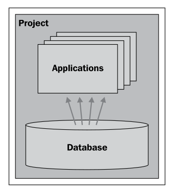
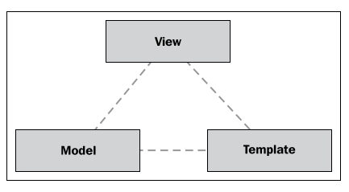
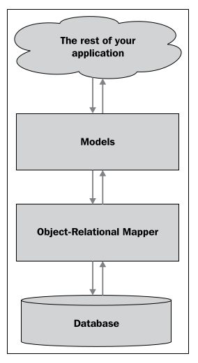
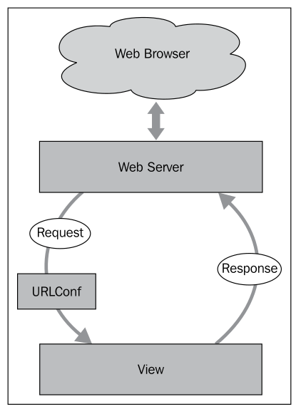

Django 应用程序的结构#
The structure of a Django application
虽然本书的范围不包括 Django 的完整教程，但花几分钟时间了解 Django 的工作原理是值得的。在 Django 中，您首先构建一个包含一个或多个 应用 的 项目。每个项目有一个单独的数据库，该数据库由项目内的各个应用共享：
Django 提供了许多内置应用，您可以将它们作为项目的一部分使用，包括以下几种：
认证 系统，支持用户帐户、组、权限和认证会话
管理 界面，允许用户查看和编辑数据
标记 应用程序，支持包括 ReStructuredText 和 Markdown 等轻量级文本标记语言
消息 框架，用于发送和接收消息
会话 系统，用于跟踪匿名（未认证）会话
网站地图 框架，用于生成站点地图
聚合 系统，用于生成 RSS 和 ATOM 订阅源
GeoDjango 扩展作为 Django 中的另一个应用进行实现，当您希望使用它时，您可以安装该扩展。
备注
注意，Django 中的应用通常比较小且独立。通常，一个应用实现系统的一个方面。例如，一个复杂的项目可能会有一个共享应用，定义共享的数据库表和常用模块，一个编辑应用允许用户编辑数据，一个导入导出应用负责数据的导入和导出，还有一个报表应用用于生成报表。这些应用协同工作以实现项目的功能。例如，报表应用可能会利用共享应用中的数据库模型存储的数据，编辑应用在用户点击 导入数据 超链接时可能会将用户重定向到导入导出视图。
该项目有一个 设置 文件，您可以使用它来配置整个项目。这些设置包括您希望在项目中包含的应用列表，使用的数据库，以及其他各种项目和应用特定的设置。
正如我们在上一章中看到的，Django 应用程序有三个主要组件：
模型 定义了应用程序的数据结构，视图 包含应用程序的业务逻辑，模板 用于控制信息如何呈现给用户。这些对应于传统 web 应用堆栈中的数据、应用和展示层。让我们逐一深入了解每个部分。
While a complete tutorial on Django is beyond the scope of this book, it is worth spending a few minutes becoming familiar with how Django works. In Django, you start by building a project that contains one or more applications. Each project has a single database that is shared by the applications within it:
Django comes with a large number of built-in applications that you can include as part of your project, including the following:
An authentication system supporting user accounts, groups, permissions, and authenticated sessions
An admin interface, allowing the user to view and edit data
A markup application supporting lightweight text markup languages including RestructuredText and Markdown
A messages framework for sending and receiving messages
A sessions system for keeping track of anonymous (non-authenticated) sessions
A sitemaps framework for generating site maps
A syndication system for generating RSS and ATOM feeds
The GeoDjango extension is implemented as yet another application within Django that you install when you wish to use it.
备注
Note that applications in Django tend to be fairly small and discrete. Often, an application will implement just one aspect of your system. For example, a complex project may have a shared application that defines the shared database tables and commonly-used modules, an editor application that allows users to edit data, an importExport application that handles importing and exporting, and a report application for generating reports. These applications work together to implement the project—for example, the report application may make use of data stored in the shared application’s database models, and the editor application may redirect the user to an importExport view when they click on the Import Data hyperlink.
The project has a settings file, which you to use to configure the project as a whole. These settings include a list of the applications you want to include in the project, which database to use, as well as various other project- and application-specific settings.
As we saw in the previous chapter, a Django application has three main components:
The models define your application’s data structures, the views contain your application’s business logic, and the templates are used to control how information is presented to the user. These correspond to the data, application, and presentation tiers within a traditional web application stack. Let’s take a closer look at each of these in turn.
模型#
Models
由于 Django 提供了一个面向数据库的对象关系映射（ORM），您无需直接处理 SQL。相反，您定义一个 模型 来描述您希望存储的数据，Django 会自动将该模型映射到数据库中：
这种高层次的数据库接口是 Django 工作效率如此高的一个主要原因。
备注
在 ShapeEditor 中，我们之前提到的数据库对象（ Shapefile、 Attribute、 Feature 和 AttributeValue）都是模型，并将在名为 models.py 的文件中定义，该文件包含了 ShapeEditor 的所有模型。
Because Django provides an object-relational mapper on top of the database, you don’t have to deal with SQL directly. Instead, you define a model that describes the data you want to store, and Django will automatically map that model onto the database:
This high-level interface to the database is a major reason why working in Django is so efficient.
备注
In the ShapeEditor, the database objects we looked at earlier (Shapefile, Attribute, Feature, and AttributeValue) are all models, and will be defined in a file named models.py that holds the ShapeEditor’s models.
视图#
Views
在 Django 中，视图是一个 Python 函数，它在特定 URL 被调用时作出响应。例如，ShapeEditor 应用程序将在 /editFeature URL 被访问时允许用户编辑某个要素；处理此 URL 的函数称为“编辑要素”视图，并将像这样定义:
def editFeature(request, shapefile_id, feature_id):
通常，应用程序的视图会在名为 views.py 的 Python 模块中定义。并不是所有的视图都必须定义在这个文件中，但通常会使用这个文件（或一个 Python 包）来存放应用程序的视图。
最简单的视图可能只返回要显示的 HTML 文本，例如:
def myView(request):
return HttpResponse("Hello World")
当然，视图通常会更加复杂，涉及数据库对象并返回非常复杂的 HTML 页面。视图也可以返回其他类型的数据，例如显示图像、下载文件，或者响应传入的 AJAX 请求。
In Django, a view is a Python function which responds when a given URL is called. For example, the ShapeEditor application will respond to the /editFeature URL by allowing the user to edit a feature; the function which handles this URL is called the “edit feature” view, and will be defined like this:
def editFeature(request, shapefile_id, feature_id):
In general, an application’s views will be defined in a Python module named, as you might expect, views.py. Not all of the application’s views have to be defined in this file, but it is common to use this file (or a Python package) to hold your application’s views.
At its simplest, a view might return the HTML text to be displayed, like this:
def myView(request):
return HttpResponse("Hello World")
Of course, views will generally be a lot more complicated, dealing with database objects and returning very sophisticated HTML pages. Views can also return other types of data, for example to display an image or download a file, or to respond to an incoming AJAX request.
URL 调度#
URL dispatching
当传入的 HTTP 请求发送到 Web 应用程序中的某个 URL 时，该请求会按以下方式转发到视图：
Web 服务器接收到请求并将其转发给 URL 调度器，在 Django 中称为 URLConf。这是一个 Python 模块，用于将传入的 URL 映射到视图。视图函数处理请求并返回响应，响应会被传回 Web 服务器，然后发送回用户的 Web 浏览器。
URLConf 模块通常命名为 urls.py，其中包含正则表达式模式及其映射到的视图。例如，下面是 ShapeEditor 的 urls.py 文件的一部分:
from django.conf.urls.defaults import *
urlpatterns = patterns('geodjango.shapeEditor.views',
(r'^shape-editor$',
'listShapefiles'),
...
)
这告诉 Django，任何匹配模式 ^shape-editor$ 的 URL（即仅包含文本 shape-editor 的 URL）将映射到位于 geodjango.shapeEditor.views 模块中的 listShapefiles 函数。
备注
这是一个略微简化的例子：前面代码示例中的 geodjango.shapeEditor.views 实际上是一个前缀，它会应用到视图名称上。前缀可以是任意的，只要前缀加上一个点，再加上视图名称，就能形成对视图函数的完全限定引用。
除了将 URL 简单地映射到视图函数外，URLConf 模块还允许你定义**参数**传递给视图。例如，以下 URL 映射:
(r'^shape-editor/edit/(?P<shapefile_id>\d+)$',
'editShapefile'),
语法有点复杂，因为使用了正则表达式模式，但基本思想是，这条 URLConf 中的条目会匹配以下形式的任何 URL：
shape-editor/edit/NNNN
在这个 URL 中，NNNN 是一个由一个或多个数字组成的序列。NNNN 的实际文本将作为额外的关键字参数 shapefile_id 传递给 editShapefile() 视图函数。这意味着视图函数将像这样定义:
def editShapefile(request, shapefile_id):
虽然 URL 映射确实要求你熟悉正则表达式，但它非常灵活，允许你精确地定义对于任何给定的传入 URL，应该调用哪个视图，并且允许你将 URL 的一部分作为参数传递给视图函数。
备注
请记住，Django 允许多个应用程序在单一项目中共存。因此，URLConf 模块属于项目，并包含所有项目应用程序的映射。在一个应用程序中，通常会定义自己的 URLConf 模块，然后由项目的 URLConf 导入该模块，将其插入到整体系统中。例如，可能有一个名为 “editor” 的应用程序，它定义了自己的 URL（例如 /add、/delete 等）。项目的 URLConf 可能会使用 /editor 前缀包含 editor 应用程序的 URL。这会将 editor 的 add() 视图函数与 /editor/add URL 关联起来。请注意，editor 应用程序仅定义它自己的 URL——它并不知道 /editor 前缀——而项目会将这些 URL 插入到适当的前缀下。这允许不同的应用程序在一个项目中共存，而互不干扰（甚至不知道彼此的 URL）。
When an incoming HTTP request is sent to a URL within the web application, that request is forwarded to the view in the following way:
The web server receives the request and passes it on to a URL dispatcher, which in Django parlance is called a URLConf. This is a Python module that maps incoming URLs to views. The view function then processes the request and returns a response, which is passed back to the web server so that it can be sent back to the user’s web browser.
The URLConf module is normally named urls.py, and consists of a list of regular expression patterns along with the views these patterns map to. For example, here is a copy of part of the ShapeEditor’s urls.py file:
from django.conf.urls.defaults import *
urlpatterns = patterns('geodjango.shapeEditor.views',
(r'^shape-editor$',
'listShapefiles'),
...
)
This tells Django that any URL which matches the pattern ^shape-editor$ (that is, a URL consisting only of the text shape-editor) will be mapped to the listShapefiles function, which can be found in the geodjango.shapeEditor.views module.
备注
This is a slight simplification: the geodjango.shapeEditor. views entry in the preceding code example is actually a prefix, which is applied to the view name. Prefixes can be anything you like, so long as the prefix plus a period plus the view name yields a fully-qualified reference to your view function.
As well as simply mapping URLs to view functions, the URLConf module also lets you define parameters to be passed to the view. Take, for example, the following URL mapping:
(r'^shape-editor/edit/(?P<shapefile_id>\d+)$',
'editShapefile'),
The syntax is a bit complicated, thanks to the use of regular expression patterns, but the basic idea is that this entry in the URLConf will match any URL of the following form:
shape-editor/edit/NNNN
In this URL, NNNN is a sequence of one or more digits. The actual text used for NNNN will be passed to the editShapefile() view function as an extra keyword parameter named shapefile_id. This means that the view function would be defined like this:
def editShapefile(request, shapefile_id):
While the URL mapping does require you to be familiar with regular expressions, it is extremely flexible, and allows you to define exactly which view will be called for any given incoming URL, as well as allowing you to include parts of the URL as parameters to the view function.
备注
Remember that Django allows multiple applications to exist within a single project. Because of this, the URLConf module belongs to the project, and contains mappings for all the project’s applications in one place. Applications often define their own URLConf modules, which are then imported by the project’s URLConf to insert them into the overall system. For example, you might have an application called “editor” that defines its own URLs (/add, /delete, and so on). The project’s URLConf might include the editor application’s URLs using the /editor prefix. This would have the effect of associating the editor’s add() view function with the overall URL /editor/add. Notice how the editor application only defines its own URLs—it doesn’t know about the /editor prefix—and the project then includes all those URLs under the appropriate prefix. This allows different applications to coexist within a single project, without interfering with (or even knowing about) each other’s URLs.
模板#
Templates
为了简化复杂 HTML 页面创建，Django 提供了一个精巧的模板系统。**模板**是一个文本文件，通过接收来自视图的变量并处理它们来动态生成网页。例如，这是 ShapeEditor 使用的 listShapefiles.html 模板中的一段代码:
<b>Available Shapefiles:</b>
<table>
{% for shapefile in shapefiles %}
<tr>
<td>{{ shapefile.filename }}</td>
...
</tr>
{% endfor %}
</table>
如你所见，大部分模板只是 HTML，其中加了一些编程结构。在这个例子中，我们通过 shapefiles 列表进行循环，为每个 shapefile 创建一行表格，并显示（除了其他信息外）shapefile 的文件名。
为了使用这个模板，视图函数可能像这样:
def myView(request):
shapefiles = ...
return render_to_response("listShapefiles.html", {'shapefiles': shapefiles})
如你所见， render_to_response() 函数接受模板名称和一个字典，字典中包含了在处理模板时需要使用的变量。结果是一个 HTML 页面，它会被展示给最终用户。
应用程序的所有模板通常都存储在应用程序目录中的 templates 目录下。
Django 还包含了一个处理数据录入表单的库。表单被定义为一个 Python 类，定义了各种字段以及与表单相关的数据验证和其他行为。例如，这是 ShapeEditor 使用的 “导入 shapefile” 表单:
class ImportShapefileForm(forms.Form):
import_file = forms.FileField(label="Select a Shapefile")
character_encoding = forms.ChoiceField(...)
forms.FileField 是一个标准的 Django 表单字段，用于处理文件上传，而 forms.ChoiceField 是一个标准的表单字段，用于显示可供选择的下拉菜单。在 Django 视图中使用表单非常容易，例如:
def importShapefile(request):
if request.method == "GET":
form = ImportShapefileForm()
return render_to_response("importShapefile.html", {'form': form})
elif request.method == "POST":
form = ImportShapefileForm(request.POST, request.FILES)
if form.is_valid():
shapefile = request.FILES['import_file']
encoding = request.POST['character_encoding']
...
else:
return render_to_response("importShapefile.html", {'form': form})
如果用户提交表单（request.method == “POST”），我们会检查表单的内容是否有效，并进行处理。否则，我们会从头开始构建一个新的表单。请注意，render_to_response() 函数被调用时，表单对象作为参数传递给模板。这个模板可能像下面这样:
<html>
<head>
<title>ShapeEditor</title>
</head>
<body>
<h1>Import Shapefile</h1>
<form enctype="multipart/form-data" method="post" action="import">
{{ form.as_p }}
<input type="submit" value="Submit"/>
</form>
</body>
</html>
{{ form.as_p }} 指令会将表单渲染为 HTML 格式（嵌入在 <p> 标签中），并将其包含在模板中。
表单在使用 GeoDjango 时尤其重要，因为地图编辑小部件作为表单的一部分实现。
这就完成了我们对 Django 的快速浏览。虽然这并不是一个全面的教程，但我们已经覆盖了足够的核心概念，让你理解在我们实现 ShapeEditor 时发生了什么。接下来，让我们开始通过为应用程序设置一个 PostGIS 数据库来实现 ShapeEditor。
To simplify the creation of complex HTML pages, Django provides a sophisticated templating system. A template is a text file that is processed to generate a web page by taking variables from the view and processing them to generate the page dynamically. For example, here is a snippet from the listShapefiles.html template used by the ShapeEditor:
<b>Available Shapefiles:</b>
<table>
{% for shapefile in shapefiles %}
<tr>
<td>{{ shapefile.filename }}</td>
...
</tr>
{% endfor %}
</table>
As you can see, most of the template is simply HTML, with a few programming constructs added. In this case, we loop through the shapefiles list, creating a table row for each shapefile, and display (among other things) the shapefile’s filename.
To use this template, the view function might look something like this:
def myView(request):
shapefiles = ...
return render_to_response("listShapefiles.html",
{'shapefiles' : shapefiles})
As you can see, the render_to_response() function takes the name of the template, and a dictionary containing the variables to use when processing the template. The result is an HTML page, which will be displayed to the end user.
All of the templates for an application are generally stored in a directory named templates within the application’s directory.
Django also includes a library for working with data-entry forms. A form is defined as a Python class defining the various fields to be entered, along with data validation and other behaviors associated with the form. For example, here is the “import shapefile” form used by the ShapeEditor:
class ImportShapefileForm(forms.Form):
import_file = forms.FileField(label="Select a Shapefile")
character_encoding = forms.ChoiceField(...)
forms.FileField is a standard Django form field for handling file uploads, while forms.ChoiceField is a standard form field for displaying a drop-down menu of available choices. It’s easy to use a form within a Django view; for example:
def importShapefile(request):
if request.method == "GET":
form = ImportShapefileForm()
return render_to_response("importShapefile.html",
{'form' : form})
elif request.method == "POST":
form = ImportShapefileForm(request.POST,
request.FILES)
if form.is_valid():
shapefile = request.FILES['import_file']
encoding = request.POST['character_encoding']
...
else:
return render_to_response("importShapefile.html",
{'form' : form})
If the user is submitting the form (request.method == “POST”), we check that the form’s contents are valid and process them. Otherwise, we build a new form from scratch. Notice that the render_to_response() function is called with the form object as a parameter to be passed to the template. This template will look something like the following:
<html>
<head>
<title>ShapeEditor</title>
</head>
<body>
<h1>Import Shapefile</h1>
<form enctype="multipart/form-data" method="post"
action="import">
{{ form.as_p }}
<input type="submit" value="Submit"/>
</form>
</body>
</html>
The {{ form.as_p }} instruction renders the form in HTML format (embedded within a <p> tag) and includes it in the template at that point.
Forms are especially important when working with GeoDjango, because the map editor widgets are implemented as part of a form.
This completes our whirlwind tour of Django. It’s certainly not comprehensive, and you are encouraged to follow the tutorials on the Django website to learn more, but we have covered enough of the core concepts for you to understand what is going on as we implement the ShapeEditor. Without further ado, let’s start implementing the ShapeEditor by setting up a PostGIS database for our application to use.